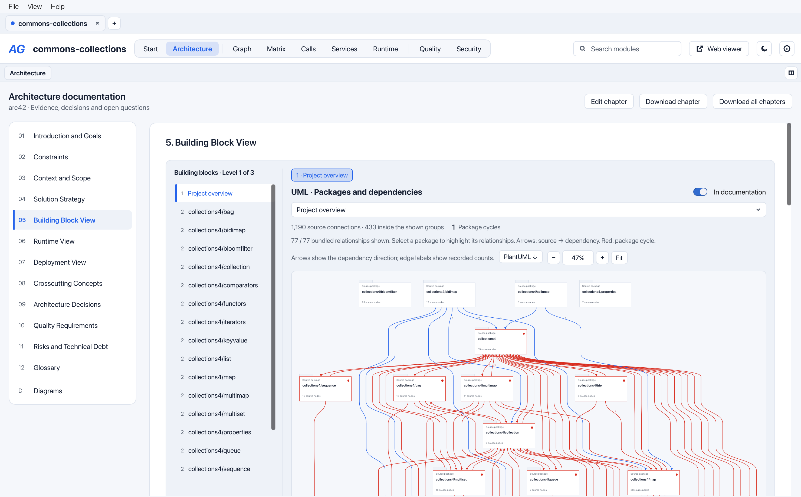

Architecture documentation
Create arc42 chapters and diagrams, maintain your own explanations, and export review artifacts.
Preview evidence before writing
archguard doc . --arc42 --stdout
archguard diagram .
archguard diagram . building-blocksStart with chapter 3 for system context and chapter 5 for building blocks. Inspect the source evidence and the diagram scope. The desktop Architecture tab lets you read chapters and choose which diagrams belong in the document.

Apache Commons Collections: source-derived building blocks in the Architecture view.
Maintain the Markdown source
archguard doc . --arc42
archguard doc . --arc42 --chapter 5
archguard doc . --arc42 --checkArchGuard finds the shallowest arc42.md or arc42/ chapter directory within its documented search depth. Otherwise it creates arc42.md in the project root. Numbered chapter files are supported. It refreshes marked generated evidence and diagram blocks while retaining manual text outside those blocks.
--check writes nothing and exits 1 if the generated content is missing or outdated. Add business goals, constraints, decisions and explanations yourself; analysis cannot infer them reliably.
Export for readers and reviewers
archguard doc . --arc42 --format asciidoc
archguard doc . --arc42 --format docx
archguard doc . --arc42 --format json
archguard report . --out architecture-review.mdAsciiDoc and Word are exports of the Markdown source, not round-trip editing formats. Default outputs are arc42.adoc and arc42.docx; --out selects another path. Word contains headings and tables plus diagram source, not rendered diagram screenshots. AsciiDoc preserves Mermaid/PlantUML blocks for a suitable renderer. JSON returns document and catalogue data without writing it.
--stdout conflicts with --out and --check, and cannot emit binary DOCX. Confluence import uses its manual Word import; there is no automatic publish step.
Export a Structurizr model
archguard graph . --format structurizr
archguard graph . --format structurizr --service ordersReplace orders with an actual service ID or unique name. The DSL is written to .archguard/reports/graph.dsl. Services become containers; external datastores become external systems. Selecting a service adds its source packages as components. Configuration relationships do not prove live traffic.
Read documentation through an agent
Use architecture_document with template=arc42 and optional chapter. Formats include AsciiDoc and the diagram catalogue. template=structurizr supports an optional service. Follow text pagination to obtain the complete document.